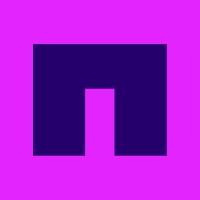
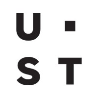
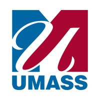

I ship measurable backend impact.
My work has reduced latency, deployment time, and operational risk across real production systems, not just classroom projects.
Software Engineer - Cloud, backend, distributed systems
I am Tung Ngo, a Computer Science B.S./M.S. student at UMass Amherst with engineering experience at NetApp, UST, and Schneider Electric. I ship backend platforms, cloud infrastructure, microservices, and AI inference systems with measurable production impact.
Seeking 2026/2027 new grad software engineering roles in backend, cloud, platform, and AI infrastructure.
Why Hire Me
My work has reduced latency, deployment time, and operational risk across real production systems, not just classroom projects.
I move comfortably from APIs and databases to Kubernetes, CI/CD, observability, and cloud infrastructure.
I have supported 200+ students as a course assistant while building in industry teams across NetApp, UST, and Schneider Electric.
Experience
My internships have centered on production systems: deployment pipelines, cloud storage workflows, high-volume messaging, microservices, and observability.

NetApp - San Jose, CA

UST - Aliso Viejo, CA
Schneider Electric - Boston, MA

UMass CICS - Amherst, MA
Selected Projects
Built distributed LLM serving infrastructure with Kubernetes and gRPC, supporting scalable low-latency inference across multiple model replicas.
Automated cloud infrastructure provisioning and lifecycle management to reduce manual deployment work and improve operational consistency.
Designed backend services for large-scale messaging workflows, including performance work around query execution, partitioning, and reliability.
Case Study
A deeper look at the project that best represents the kind of systems work I want to keep doing: infrastructure that makes intelligent products faster, safer, and easier to operate.
LLM inference needs to serve multiple model replicas with low latency, predictable deployment flow, and resilience when workloads or containers fail.
I built distributed serving infrastructure using Kubernetes, Docker, REST, and gRPC, plus CI/CD workflows for validation, experimentation, and production-style releases.
The system improved inference throughput and reliability through orchestration, health monitoring, and fault-tolerant recovery mechanisms.
Technical Range
Go, Python, TypeScript, JavaScript, C, Java, C++, SQL
Next.js, React, Node.js, Effect, .NET, FastAPI, Spring Boot, REST APIs, gRPC
Vercel, AWS Lambda, S3, EC2, Azure, PostgreSQL, Docker, Kubernetes, Jenkins, Linux
Distributed systems, CI/CD, observability, debugging, microservices, Agile, Git
Education
Bachelor and Master of Science in Computer Science - GPA 3.9/4.0 - May 2026
Let's Talk
I am seeking 2026/2027 new grad software engineering roles in backend, cloud, platform, and AI infrastructure. Send me the problem you are trying to solve and I will bring the engineering energy.